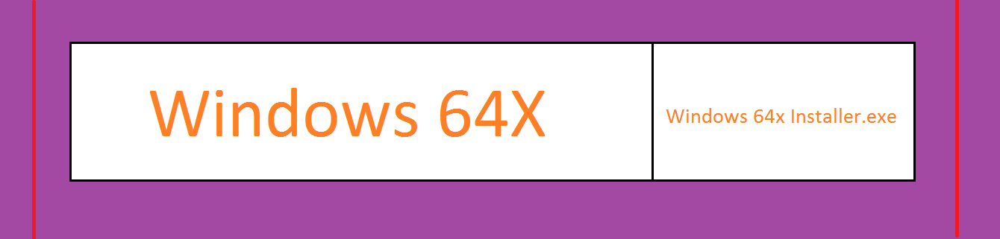
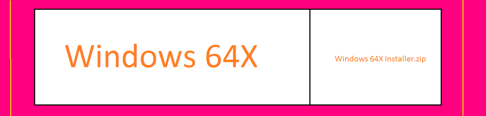

1.Small Introduction
Java Se Is A Behind Tasker Which Can Install Compiler Of Java
2.Deals
1.You Must See The Tearms And Policy.
2.If You Download The .exe Version It Shows A Message On The Bottom That Message Is 'These Type Of Files Can Harm Your Computer' You Can Say Yes Beacause It Contain No Virus If You Don't Belive You Can Download The .zip Version.

